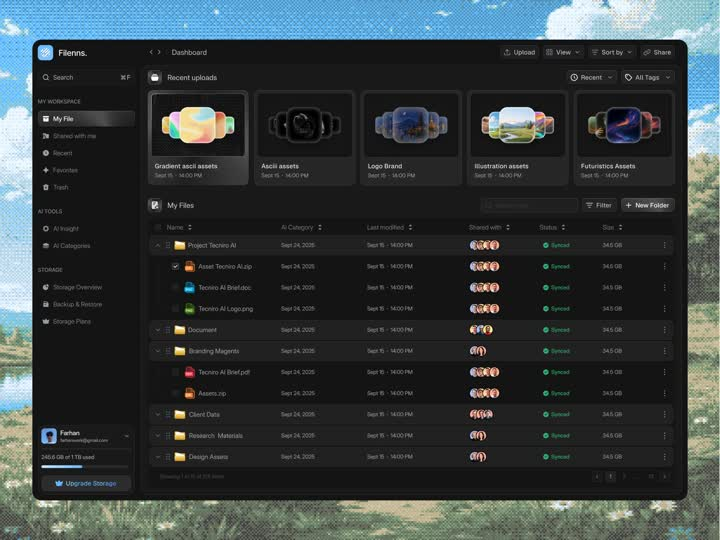

Static comp: dark file-management dashboard ('Filenns.') floating over a bright sky photograph - sidebar with workspace/storage sections, recent-uploads card row, full file table with avatar stacks and status pills.
Media
Frame-by-frame

image
Full desktop comp: left sidebar (search, MY WORKSPACE: My File/Shared/Recent/Favorites/Trash; AI TOOLS: AI Insight/AI Categories; STORAGE: Storage Overview/Backup & Restore/Storage Plans; user card + storage meter + Upgrade button). Main: breadcrumb, Upload/View/Sort by/Share controls, 'Recent uploads' 5 preview cards with colorful thumbnails, 'My Files' table (Name, AI Category, Last modified, Shared with avatar stack, Status 'Synced' green dot pill, Size) with folder and file rows. Window floats over a pixel-dithered sky photo.
Build prompt
Rebuild this static comp 1:1, pixel-faithful: a dark file-management dashboard ("Filenns.") floating over a bright pixel-dithered sky photograph. There is no motion - layout and typography are the deliverable.
## Integration
Integration: stack-agnostic spec - every value is plain layout/typography/CSS; recreate with your own components and assets.
## Layout
Desktop window floating centered over the sky photo, soft shadow, 12px radius, sky visible at the edges. Two columns inside: sidebar + main pane.
## Content
- Sidebar: search field; MY WORKSPACE (My File, Shared, Recent, Favorites, Trash); AI TOOLS (AI Insight, AI Categories); STORAGE (Storage Overview, Backup & Restore, Storage Plans); bottom user card with storage meter and Upgrade button.
- Main: breadcrumb; control row (Upload, View, Sort by, Share); "Recent uploads" - 5 preview cards with colorful thumbnails; "My Files" table - columns Name, AI Category, Last modified, Shared (avatar stack), Status (green-dot "Synced" pill), Size; folder rows and file rows.
## Typography & color
Near-black surfaces; sidebar slightly darker than the main pane; 1px white/8 dividers; section labels 10-11px uppercase zinc-500; row text 13-14px; semibold only for product name and table emphasis. No card-in-card boxing - separation by whitespace and hairlines.
## States
Static comp. At most a 120ms hover background (white/5) on table rows and sidebar items.
## Don't miss
- Avatar stacks overlap with 2px rings matching the surface color.
- Status pills are quiet: green dot + text, no filled badge.
- The dithered sky backdrop is part of the comp - flat color behind the window kills it.
Mechanics
trigger
static comp
elements
sidebar, upload cards, data table, avatar stacks, status pills, storage meter